vignettes/GeneExpression.Rmd
GeneExpression.Rmd📄 See also: Protein-level meta-analysis — CPTAC pan-cancer example
Imagine you’re studying a disease and find 5 different studies on Gene Expression Omnibus, each identifying ~500 differentially expressed genes (DEGs). But only 50 genes overlap! Which genes are truly important?
MetaVolcanoR solves this by:
Comparing the expression of genes under a given condition against a reference biological state is usually applied to identify sets of differentially expressed genes (DEG). These DEG point out the genomic regions functionally relevant under the biological condition of interest.
Although individual genome-wide expression studies have small signal/noise ratio, today’s genomic data availability usually allows combining differential gene expression results from dozens of independent studies to overcome this limitation.
Databases such as GEO, SRA, ArrayExpress, and ENA offer systematic access to vast amounts of transcriptome data. There exists more than one gene expression study for many biological conditions. This redundancy can be exploited by meta-analysis approaches to reveal genes that are consistently and differentially expressed under given conditions.
MetaVolcanoR was designed to identify the genes whose expression is consistently perturbed across several DE tables, and — as this vignette also shows — it applies just as well to other feature types (transcripts, methylation probes) that share the same identifier / log-fold-change / p-value / confidence-interval structure.
The MetaVolcanoR R package combines differential expression results across studies. It implements three strategies to summarize differential activity from different studies:
In all three, MetaVolcanoR exploits the volcano-plot reasoning to visualize the meta-analysis result. All plots below use the package’s default styling; a dedicated Customizing your plots section at the end covers colors, titles, and labeling in depth.
MetaVolcanoR requires differential expression results with:
MetaVolcanoR only ever needs those four fields — what changes is how you get there from whatever tool you already used. Find your scenario below and jump straight to it; each tab shows only the code relevant to that path, so you don’t need to read the others.
CI.L/CI.R) computed → CI
ready
If your DE results already include confidence interval columns
(e.g. CI.L and CI.R), you’re ready to go — the
package will automatically calculate variance from them:
# Your data has CI.L and CI.R columns
meta_rem <- rem_mv(
diffexp = your_data_list,
llcol = "CI.L", # Left limit of CI
rlcol = "CI.R", # Right limit of CI
cvar = TRUE # Calculate variance from CI (default)
)Most tools (DESeq2, limma, edgeR) output standard error, not confidence intervals. Convert SE to a 95% CI:
# From DESeq2 results
deseq_results <- results(dds) # or after shrinkage
deseq_results$CI.L <- deseq_results$log2FoldChange - 1.96 * deseq_results$lfcSE
deseq_results$CI.R <- deseq_results$log2FoldChange + 1.96 * deseq_results$lfcSE
# From limma results (if you have an SE column)
limma_results$CI.L <- limma_results$logFC - 1.96 * limma_results$SE
limma_results$CI.R <- limma_results$logFC + 1.96 * limma_results$SEIf you have variance (or can calculate it from SE:
variance = SE^2), use the vcol parameter
instead:
your_data$variance <- your_data$SE^2
meta_rem <- rem_mv(
diffexp = your_data_list,
vcol = "variance", # Column name with variance
cvar = FALSE # Don't calculate from CI
)If your DE results have no confidence interval columns, variance can
be approximated from the fold-change and the test statistic
(e.g. z-score or moderated t-statistic), using
stat ≈ log2FC / SE, which gives
var = (log2FC / stat)^2:
diffexp_list <- lapply(diffexp_list, function(df) {
df %>%
mutate(var = ifelse(stat == 0 | is.na(stat),
NA_real_,
(log2FC / stat)^2))
})The ifelse guard matters: transcripts where
stat = 0 would otherwise produce infinite variance and
cause rem_mv() to fail. Setting them to NA
lets the model skip them gracefully (they come back flagged
error = TRUE in the result, rather than aborting the whole
run).
meta_mv <- rem_mv(
diffexp = diffexp_list,
pcriteria = "pvalue",
foldchangecol = "log2FC",
genenamecol = "Symbol",
geneidcol = "Symbol",
llcol = NULL,
rlcol = NULL,
vcol = "var",
cvar = FALSE
)prepare_deseq2() maps a DESeqResults object
straight into MetaVolcanoR’s format.
library(DESeq2)
library(MetaVolcanoR)
dds <- DESeqDataSetFromMatrix(count_matrix, sample_info, design = ~ condition)
dds <- DESeq(dds)
res_treatment1 <- results(dds, contrast = c("condition", "Treatment1", "Control"))
res_treatment2 <- results(dds, contrast = c("condition", "Treatment2", "Control"))
res_treatment3 <- results(dds, contrast = c("condition", "Treatment3", "Control"))
study1 <- prepare_deseq2(res_treatment1)
study2 <- prepare_deseq2(res_treatment2)
study3 <- prepare_deseq2(res_treatment3)
my_studies <- list(
"Treatment1_vs_Control" = study1,
"Treatment2_vs_Control" = study2,
"Treatment3_vs_Control" = study3
)
meta_results <- rem_mv(diffexp = my_studies, metathr = 0.01,
outputfolder = tempdir(), draw = "HTML")
meta_results@MetaVolcano
head(meta_results@metaresult)prepare_limma() maps a limma::topTable()
output straight into MetaVolcanoR’s format.
library(limma)
library(MetaVolcanoR)
fit <- eBayes(lmFit(expr, design))
limma_toptable <- topTable(fit, coef = 2, number = Inf, confint = TRUE)
study1 <- prepare_limma(limma_toptable)prepare_edger() maps an edgeR
topTags()$table straight into MetaVolcanoR’s format.
library(edgeR)
library(MetaVolcanoR)
et <- exactTest(dge)
tt <- topTags(et, n = Inf)
study1 <- prepare_edger(tt$table)If your differential expression analysis was performed at the
transcript level using swish() from the fishpond package,
prepare_swish() maps your results table straight into
MetaVolcanoR’s format, deriving an approximate variance from Swish’s
test statistic — no need to carry the SummarizedExperiment
object or its inferential replicates forward.
swish() adds stat, log2FC,
pvalue, locfdr, qvalue to
rowData(). If you extracted your table with
det <- as.data.frame(mcols(se)), these columns carry
over directly.
library(fishpond)
library(SummarizedExperiment)
det_1 <- as.data.frame(mcols(se_swish_1))
det_2 <- as.data.frame(mcols(se_swish_2))
# Auto-detects the identifier column (tx_name, tx_id, transcript_id, transcript_name)
study_1 <- prepare_swish(det = det_1)
study_2 <- prepare_swish(det = det_2, tx_col = "tx_name") # or specify explicitly
my_studies <- list(study1 = study_1, study2 = study_2)
meta_results <- rem_mv(
diffexp = my_studies,
pcriteria = "pvalue",
foldchangecol = "Log2FC",
genenamecol = "Symbol",
llcol = "CI.L",
rlcol = "CI.R",
cvar = TRUE,
metathr = 0.01,
draw = "HTML"
)If your identifiers are plain Ensembl transcript IDs, the
Symbol column will contain values like
ENST00000456328.2. The meta-analysis still runs fine — this
only affects how labels look on the plot.
GEO holds thousands of independent studies of comparable conditions,
and NCBI’s GEO2R
runs a limma differential-expression analysis on any suitable series
directly in the browser, exporting a standardized table
(Gene.symbol, logFC, P.Value,
t, …). prepare_geo2r() maps that table to
MetaVolcanoR’s format, deriving the 95% CI from the moderated
t-statistic (SE = logFC / t), so a plain GEO2R export can
feed the REM without any manual reformatting:
geo_tab <- read.delim("GSE12345.top.table.tsv", stringsAsFactors = FALSE)
study_1 <- prepare_geo2r(geo_tab)
head(study_1)
# Combine three independent GEO2R tables
diffexplist_geo <- lapply(list(GSE1 = tab1, GSE2 = tab2, GSE3 = tab3), prepare_geo2r)
meta_geo <- rem_mv(
diffexp = diffexplist_geo,
pcriteria = "pvalue",
foldchangecol = "Log2FC",
genenamecol = "Symbol",
llcol = "CI.L",
rlcol = "CI.R",
cvar = TRUE,
jobname = "GEO2R",
draw = "PDF"
)Note: the prepare_* functions
automatically remove rows with NA values, calculate 95%
confidence intervals where possible, format column names to
MetaVolcanoR’s expected structure, and filter out infinite values. All
of them converge on the same four columns (Symbol,
Log2FC, pvalue, and
CI.L/CI.R), so once your studies are prepared,
the rest of the workflow below is identical no matter which tool they
came from.
## Symbol Log2FC pvalue CI.L CI.R
## 1 A1BG -0.70126879 0.000140100 -1.0087857 -0.39375189
## 2 A1BG-AS1 -0.25106351 0.008694757 -0.4304790 -0.07164803
## 3 A1CF 0.03332573 0.615989488 -0.1036882 0.17033968
## 4 A2M 0.83504214 0.018550388 0.1568214 1.51326289
## 5 A2ML1 0.03942552 0.843222358 -0.3728473 0.45169836
## 6 A4GALT -0.20815882 0.282488068 -0.6025247 0.18620708
str(diffexplist[[1]])## 'data.frame': 6573 obs. of 5 variables:
## $ Symbol: chr "A1BG" "A1BG-AS1" "A1CF" "A2M" ...
## $ Log2FC: num -0.7013 -0.2511 0.0333 0.835 0.0394 ...
## $ pvalue: num 0.00014 0.00869 0.61599 0.01855 0.84322 ...
## $ CI.L : num -1.009 -0.43 -0.104 0.157 -0.373 ...
## $ CI.R : num -0.3938 -0.0716 0.1703 1.5133 0.4517 ...
## - attr(*, ".internal.selfref")=<externalptr>Your prepared data should have these columns: Symbol (or
another feature identifier), Log2FC, pvalue,
and — for the REM method — CI.L/CI.R.
## Number of datasets: 5## Genes per dataset: 6573, 6573, 6944, 7131, 6944The REM MetaVolcano summarizes the fold-change of a feature across
several studies, taking the per-study variance into account, and
estimates a summary p-value — the probability that the summary
fold-change is not different from zero. The metathr
parameter highlights the top percentage of most consistently perturbed
features, ranked using the topconfects
approach.
Since the current package version, the REM result also reports
randomP.adjust: randomP corrected for multiple
testing across all meta-analyzed features (Benjamini-Hochberg by
default; configurable via the fdr_method argument — see
?rem_mv). Use randomP.adjust, not the nominal
randomP, for feature selection and for functional
enrichment (see below).
mv_rem <- rem_mv(
diffexp = diffexplist,
pcriteria = "pvalue",
foldchangecol = "Log2FC",
genenamecol = "Symbol",
llcol = "CI.L",
rlcol = "CI.R",
metathr = 0.01,
jobname = "REM_example",
outputfolder = tempdir(),
draw = "HTML"
)## index Symbol Log2FC_1 CI.L_1 CI.R_1 vi_1 Log2FC_2
## 1 4795 MXRA5 0.8150851 0.3109324 1.3192377 0.06616251 1.3001104
## 2 2166 COL6A6 -1.7480348 -2.5780749 -0.9179947 0.17934364 -0.8388366
## 3 2053 CIDEA NA NA NA NA NA
## 4 7115 SULT1A4 0.9689025 0.5103475 1.4274575 0.05473571 0.7513323
## 5 130 ACACB -0.8431142 -1.4708480 -0.2153804 0.10257437 -1.1119841
## 6 6528 SLC27A2 -0.6782948 -0.9931027 -0.3634869 0.02579759 -1.8916655
## CI.L_2 CI.R_2 vi_2 Log2FC_3 CI.L_3 CI.R_3 vi_3
## 1 0.6603306 1.9398901 0.10654886 1.1895480 0.8401301 1.5389659 0.031781777
## 2 -1.3578456 -0.3198277 0.07011930 -1.0300519 -1.4730328 -0.5870710 0.051080819
## 3 NA NA NA -1.0111528 -1.3226326 -0.6996729 0.025255027
## 4 0.4707021 1.0319624 0.02050012 NA NA NA NA
## 5 -1.7417389 -0.4822293 0.10323592 -0.5305046 -0.6957455 -0.3652637 0.007107599
## 6 -2.6822584 -1.1010726 0.16270229 -1.2126830 -1.6702908 -0.7550753 0.054509799
## Log2FC_4 CI.L_4 CI.R_4 vi_4 Log2FC_5 CI.L_5 CI.R_5
## 1 0.2188594 -1.052230 1.4899492 0.4205720 0.8051543 0.1367255 1.4735830
## 2 -1.3755263 -2.162453 -0.5885999 0.1611967 -0.7213490 -1.5714484 0.1287505
## 3 -1.7991026 -2.918939 -0.6792665 0.3264351 -0.8738120 -1.6373061 -0.1103179
## 4 NA NA NA NA NA NA NA
## 5 -0.7991042 -1.457868 -0.1403403 0.1129659 -0.5155929 -0.8606782 -0.1705076
## 6 -1.3554403 -2.288444 -0.4224370 0.2265970 -1.4905464 -2.5565023 -0.4245905
## vi_5 signcon ntimes randomSummary randomCi.lb randomCi.ub randomP
## 1 0.11630493 5 5 1.0333001 0.7882044 1.2783958 1.420312e-16
## 2 0.18811668 -5 5 -1.0649749 -1.3396138 -0.7903361 2.956522e-14
## 3 0.15173972 -3 3 -1.0417876 -1.3210774 -0.7624977 2.653168e-13
## 4 NA 2 2 0.8106154 0.5712566 1.0499741 3.187477e-11
## 5 0.03099851 -5 5 -0.5830624 -0.7212245 -0.4449003 1.324963e-16
## 6 0.29577833 -5 5 -1.2207058 -1.6760435 -0.7653680 1.484852e-07
## het_QE het_QEp het_QM het_QMp error randomP.adjust se
## 1 4.179945 0.38220032 68.27752 1.420312e-16 FALSE 3.737313e-13 0.12504883
## 2 4.580708 0.33308457 57.76318 2.956522e-14 FALSE 4.667756e-11 0.14012185
## 3 1.980047 0.37156797 53.44957 2.653168e-13 FALSE 3.490685e-10 0.14249482
## 4 0.629179 0.42765661 44.05825 3.187477e-11 FALSE 2.287450e-08 0.12212181
## 5 4.317851 0.36469506 68.41455 1.324963e-16 FALSE 3.737313e-13 0.07049086
## 6 11.099093 0.02547263 27.60901 1.484852e-07 FALSE 3.255949e-05 0.23231516
## rank
## 1 1
## 2 2
## 3 3
## 4 4
## 5 5
## 6 6
head(mv_rem@metaresult, 3)## Symbol signcon randomSummary randomCi.lb randomCi.ub randomP het_QE
## 1 MXRA5 5 1.033300 0.7882044 1.2783958 1.420312e-16 4.179945
## 2 COL6A6 -5 -1.064975 -1.3396138 -0.7903361 2.956522e-14 4.580708
## 3 CIDEA -3 -1.041788 -1.3210774 -0.7624977 2.653168e-13 1.980047
## het_QEp het_QM het_QMp error randomP.adjust rank
## 1 0.3822003 68.27752 1.420312e-16 FALSE 3.737313e-13 1
## 2 0.3330846 57.76318 2.956522e-14 FALSE 4.667756e-11 2
## 3 0.3715680 53.44957 2.653168e-13 FALSE 3.490685e-10 3
mv_rem@MetaVolcano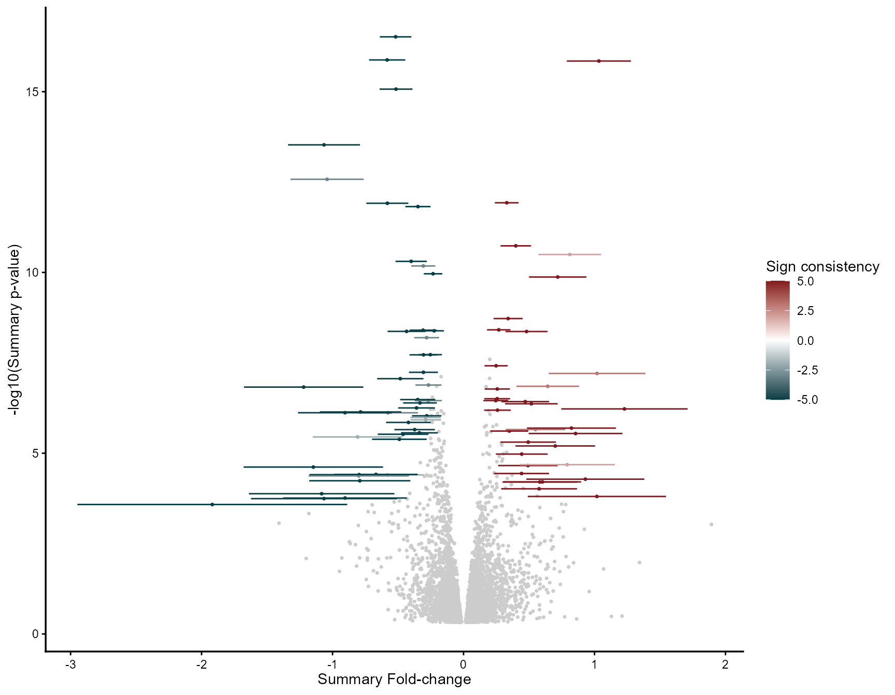
When label_top_n is used, features are ranked by the
topconfects rank metric, which balances effect size and
confidence, rather than by fold-change or p-value alone:
mv_rem_labeled <- rem_mv(
diffexp = diffexplist,
pcriteria = "pvalue",
foldchangecol = "Log2FC",
genenamecol = "Symbol",
llcol = "CI.L",
rlcol = "CI.R",
metathr = 0.01,
label_top_n = 10,
label_size = 3.5,
jobname = "REM_labeled",
outputfolder = tempdir(),
draw = "HTML"
)## index Symbol Log2FC_1 CI.L_1 CI.R_1 vi_1 Log2FC_2
## 1 4795 MXRA5 0.8150851 0.3109324 1.3192377 0.06616251 1.3001104
## 2 2166 COL6A6 -1.7480348 -2.5780749 -0.9179947 0.17934364 -0.8388366
## 3 2053 CIDEA NA NA NA NA NA
## 4 7115 SULT1A4 0.9689025 0.5103475 1.4274575 0.05473571 0.7513323
## 5 130 ACACB -0.8431142 -1.4708480 -0.2153804 0.10257437 -1.1119841
## 6 6528 SLC27A2 -0.6782948 -0.9931027 -0.3634869 0.02579759 -1.8916655
## CI.L_2 CI.R_2 vi_2 Log2FC_3 CI.L_3 CI.R_3 vi_3
## 1 0.6603306 1.9398901 0.10654886 1.1895480 0.8401301 1.5389659 0.031781777
## 2 -1.3578456 -0.3198277 0.07011930 -1.0300519 -1.4730328 -0.5870710 0.051080819
## 3 NA NA NA -1.0111528 -1.3226326 -0.6996729 0.025255027
## 4 0.4707021 1.0319624 0.02050012 NA NA NA NA
## 5 -1.7417389 -0.4822293 0.10323592 -0.5305046 -0.6957455 -0.3652637 0.007107599
## 6 -2.6822584 -1.1010726 0.16270229 -1.2126830 -1.6702908 -0.7550753 0.054509799
## Log2FC_4 CI.L_4 CI.R_4 vi_4 Log2FC_5 CI.L_5 CI.R_5
## 1 0.2188594 -1.052230 1.4899492 0.4205720 0.8051543 0.1367255 1.4735830
## 2 -1.3755263 -2.162453 -0.5885999 0.1611967 -0.7213490 -1.5714484 0.1287505
## 3 -1.7991026 -2.918939 -0.6792665 0.3264351 -0.8738120 -1.6373061 -0.1103179
## 4 NA NA NA NA NA NA NA
## 5 -0.7991042 -1.457868 -0.1403403 0.1129659 -0.5155929 -0.8606782 -0.1705076
## 6 -1.3554403 -2.288444 -0.4224370 0.2265970 -1.4905464 -2.5565023 -0.4245905
## vi_5 signcon ntimes randomSummary randomCi.lb randomCi.ub randomP
## 1 0.11630493 5 5 1.0333001 0.7882044 1.2783958 1.420312e-16
## 2 0.18811668 -5 5 -1.0649749 -1.3396138 -0.7903361 2.956522e-14
## 3 0.15173972 -3 3 -1.0417876 -1.3210774 -0.7624977 2.653168e-13
## 4 NA 2 2 0.8106154 0.5712566 1.0499741 3.187477e-11
## 5 0.03099851 -5 5 -0.5830624 -0.7212245 -0.4449003 1.324963e-16
## 6 0.29577833 -5 5 -1.2207058 -1.6760435 -0.7653680 1.484852e-07
## het_QE het_QEp het_QM het_QMp error randomP.adjust se
## 1 4.179945 0.38220032 68.27752 1.420312e-16 FALSE 3.737313e-13 0.12504883
## 2 4.580708 0.33308457 57.76318 2.956522e-14 FALSE 4.667756e-11 0.14012185
## 3 1.980047 0.37156797 53.44957 2.653168e-13 FALSE 3.490685e-10 0.14249482
## 4 0.629179 0.42765661 44.05825 3.187477e-11 FALSE 2.287450e-08 0.12212181
## 5 4.317851 0.36469506 68.41455 1.324963e-16 FALSE 3.737313e-13 0.07049086
## 6 11.099093 0.02547263 27.60901 1.484852e-07 FALSE 3.255949e-05 0.23231516
## rank
## 1 1
## 2 2
## 3 3
## 4 4
## 5 5
## 6 6
mv_rem_labeled@MetaVolcano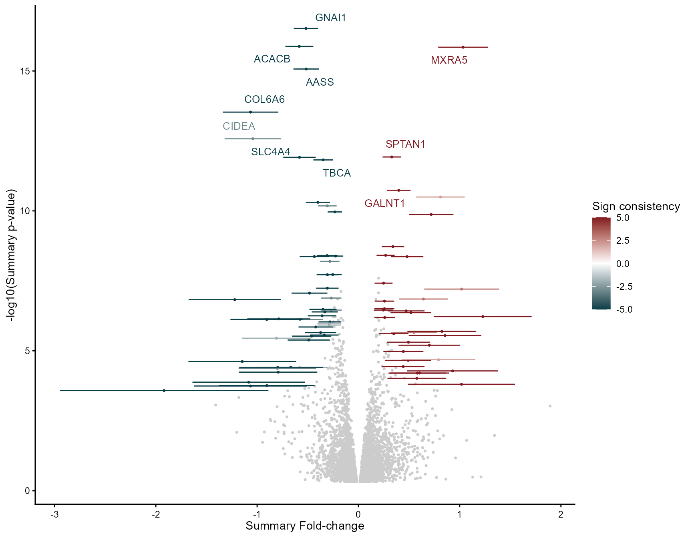
draw_forest() shows the per-study fold-change and
confidence interval behind the REM summary for a single feature. Below,
one consistently up-regulated feature
(MMP9) and one consistently down-regulated
feature (COL6A6):
draw_forest(
remres = mv_rem,
gene = "MMP9",
genecol = "Symbol",
foldchangecol = "Log2FC",
llcol = "CI.L",
rlcol = "CI.R",
jobname = "MetaVolcano",
outputfolder = tempdir(),
draw = "HTML"
)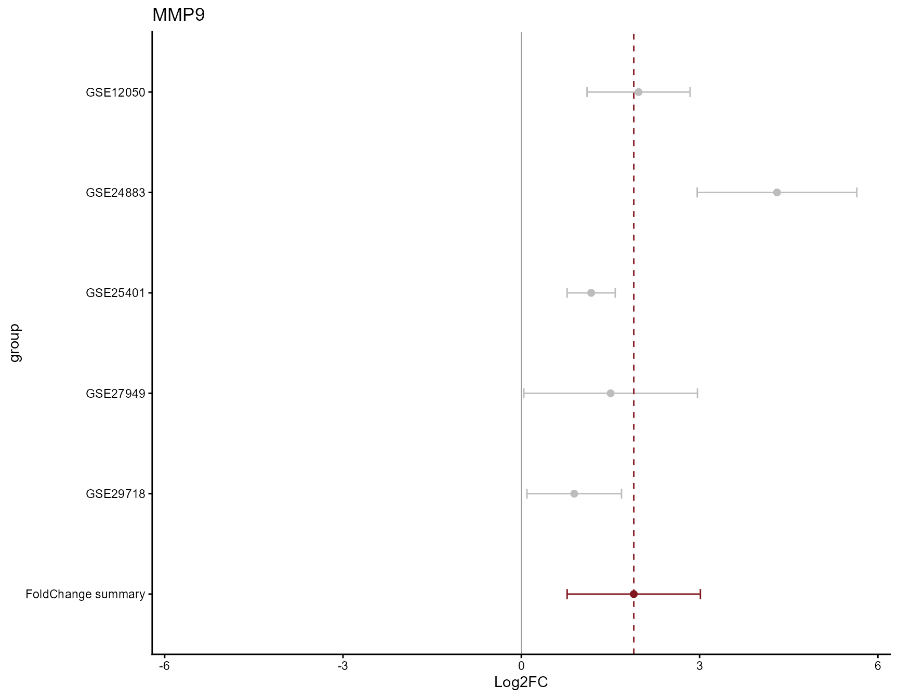
draw_forest(
remres = mv_rem,
gene = "COL6A6",
genecol = "Symbol",
foldchangecol = "Log2FC",
llcol = "CI.L",
rlcol = "CI.R",
jobname = "MetaVolcano",
outputfolder = tempdir(),
draw = "HTML"
)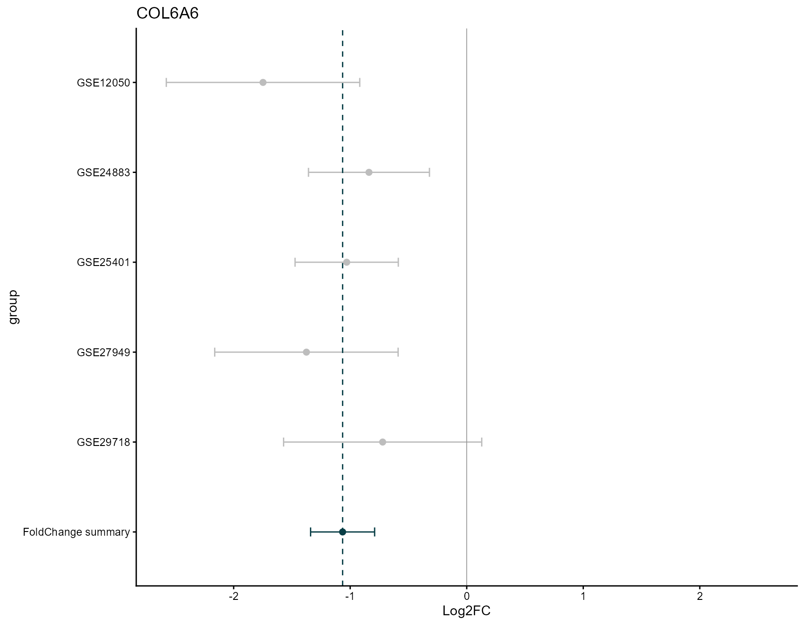
The vote-counting MetaVolcano identifies differentially expressed features per study, based on user-defined p-value and fold-change thresholds, and displays how many studies call each feature differentially expressed and in which direction. A feature perturbed in five studies, three of them downregulated, gets a sign-consistency score of 2 + (-3) = -1.
Labels are selected using abs(idx) — the package’s own
combined metric of frequency and direction consistency
(idx = ndeg × ddeg) — rather than ndeg alone,
which avoids labeling features with inconsistent direction across
studies just because they were tested often:
| Feature | ndeg | ddeg | idx | Rank by ndeg alone |
Rank by abs(idx)
|
|---|---|---|---|---|---|
| A | 5 | 5 | 25 | 1st (tied) | 1st |
| B | 5 | -5 | -25 | 1st (tied) | 2nd |
| C | 5 | 1 | 5 | 1st (tied) | 3rd |
mv_vote <- votecount_mv(
diffexp = diffexplist,
pcriteria = "pvalue",
foldchangecol = "Log2FC",
genenamecol = "Symbol",
geneidcol = NULL,
pvalue = 0.05,
foldchange = 0,
metathr = 0.01,
label_top_n = 10,
label_size = 3.5,
jobname = "Vote_example",
outputfolder = tempdir(),
draw = "HTML"
)
head(mv_vote@metaresult, 3)## Symbol deg_1 deg_2 deg_3 deg_4 deg_5 ndeg ddeg idx degvcount
## 1 ABCC3 1 1 1 1 1 5 5 25 2.Up-regulated
## 2 ABHD5 -1 -1 -1 -1 -1 5 -5 -25 0.Down-regulated
## 3 ACACB -1 -1 -1 -1 -1 5 -5 -25 0.Down-regulated
mv_vote@MetaVolcano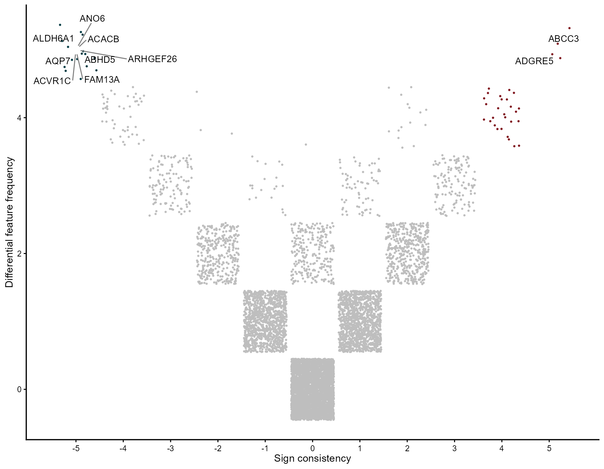
draw_featurebar() accepts a colors
parameter (see Customizing your
plots) and, via mv_vote@featurefreq, also shows the
inverse cumulative distribution of consistently perturbed features:
mv_vote@featurefreq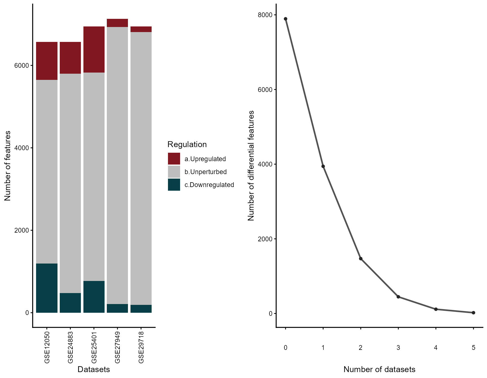
The combining MetaVolcano summarizes a feature’s fold-change across
studies by mean or median, and combines its per-study p-values with
Fisher’s method. As with the REM, the result now also reports
metap.adjust — metap corrected for multiple
testing (default Benjamini-Hochberg, configurable via
fdr_method) — which is what should drive feature selection
rather than the nominal metap.
mv_fisher <- combining_mv(
diffexp = diffexplist,
pcriteria = "pvalue",
foldchangecol = "Log2FC",
genenamecol = "Symbol",
metafc = "Mean",
metathr = 0.01,
collaps = TRUE,
jobname = "Fisher_example",
outputfolder = tempdir(),
draw = "HTML"
)
head(mv_fisher@metaresult, 3)## Symbol metap metap.adjust metafc idx
## 1 MMP9 9.002947e-15 3.912045e-12 1.9693517 27.66076
## 2 ACVR1C 3.548802e-20 8.738332e-17 -1.2544105 -24.39818
## 3 ANG 5.674270e-26 4.191583e-22 -0.9364936 -23.64280
mv_fisher@MetaVolcano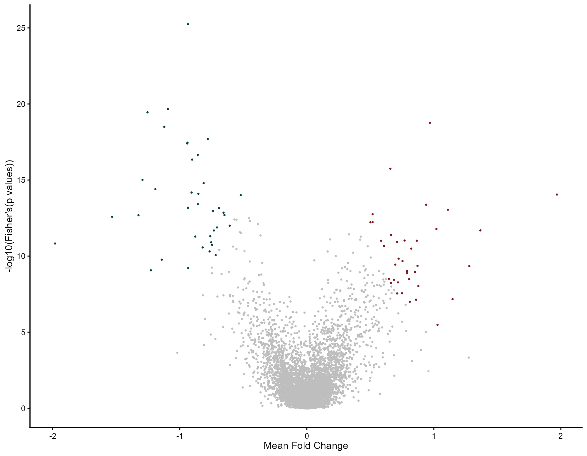
enrichment_mv()
enrichment_mv() wraps fGSEA and integrates
directly with a REM MetaVolcano result. Gene sets can be supplied
manually or downloaded automatically from MSigDB via msigdbr. It
automatically ranks by the FDR-adjusted randomP.adjust when
present (falling back to randomP with a message for REM
results produced by an older package version).
# GO Biological Process (default category = "C5")
enrich <- enrichment_mv(mv_rem, subcategory = "GO:BP")
enrich$plot
head(enrich$result)Three ranking strategies are available:
| Ranking | Formula | Best for |
|---|---|---|
fc |
randomSummary |
Pathways with large effects |
signed_p |
-log10(p) × sign(FC) |
Pathways with consistent significance |
weighted_fc |
FC × -log10(p) |
Balanced detection |
enrich_fc <- enrichment_mv(mv_rem, ranking = "fc")
enrich_sp <- enrichment_mv(mv_rem, ranking = "signed_p")
enrich_wfc <- enrichment_mv(mv_rem, ranking = "weighted_fc")
enrich <- enrichment_mv(
mv_rem,
category = "C5",
subcategory = "GO:BP",
ranking = "weighted_fc",
plot_padj = 0.05,
plot_top_n = 20,
clean_pathway_names = TRUE,
colors = c(down = "navy", up = "darkred"),
plot_title = "GO:BP Enrichment (weighted FC ranking)"
)
enrich$plotCustom gene sets are also supported directly:
my_pathways <- list(
"INFLAMMATION" = c("IL6", "TNF", "IL1B", "CXCL8", "CCL2"),
"ANGIOGENESIS" = c("VEGFA", "FLT1", "KDR", "ANGPT1"),
"ECM_REMODEL" = c("MMP2", "MMP9", "MMP12", "COL1A1")
)
enrich_custom <- enrichment_mv(mv_rem, pathways = my_pathways, clean_pathway_names = FALSE)MetaVolcanoR is feature-agnostic: the same three strategies used
above for genes apply directly to Illumina methylation microarray
probes, or any other feature type described by an identifier, a log
fold-change, a p-value, and a confidence interval. This section
simulates four Illumina 450k datasets following the format of
limma’s differential methylation output, to show the full
workflow end to end.
For instructive purposes we use a subset of the 450k probe IDs (the first 1000) to generate simulated per-probe results across 4 datasets:
ann450k <- getAnnotation(IlluminaHumanMethylation450kanno.ilmn12.hg19)
ann450k_df <- as.data.frame(ann450k) %>%
rownames_to_column(var = "Probe_ID")
simulatedResults <- purrr::map_dfr(1:4, ~
tibble::tibble(
dataset = paste0("dataset_", .x),
probes = ann450k_df$Probe_ID[1:1000]
) %>%
dplyr::mutate(
logFC = rnorm(dplyr::n(), mean = -0.01, sd = 1),
AveExpr = rnorm(dplyr::n(), mean = -0.75, sd = 2.5),
t = rnorm(dplyr::n(), mean = -0.2, sd = 2),
P.Value = runif(dplyr::n(), min = 0, max = 1),
adj.P.Val = p.adjust(P.Value, method = "BH"),
B = rnorm(dplyr::n(), mean = -4.00, sd = 3.5),
deltaBeta = rnorm(dplyr::n(), mean = -0.001, sd = 0.05)
)
)
head(simulatedResults)## # A tibble: 6 × 9
## dataset probes logFC AveExpr t P.Value adj.P.Val B deltaBeta
## <chr> <chr> <dbl> <dbl> <dbl> <dbl> <dbl> <dbl> <dbl>
## 1 dataset_1 cg00050873 -1.83 -0.491 -0.836 0.434 0.976 -4.43 -0.121
## 2 dataset_1 cg00212031 -0.257 -2.51 0.416 0.831 0.976 -4.85 0.0321
## 3 dataset_1 cg00213748 -0.254 2.99 1.40 0.246 0.976 -1.52 0.0130
## 4 dataset_1 cg00214611 -0.293 -1.51 3.30 0.410 0.976 -5.68 -0.0998
## 5 dataset_1 cg00455876 -0.564 -4.19 0.331 0.827 0.976 -5.11 0.0238
## 6 dataset_1 cg01707559 0.619 1.46 0.434 0.131 0.976 -2.21 0.0667MetaVolcanoR needs a standard error and a fold-change confidence
interval. Since limma’s moderated t-statistic is
t = logFC / SE, we recover SE = logFC / t and
approximate the 95% CI as logFC ± 1.96 * SE — exactly the
same relationship used for prepare_swish() and
prepare_geo2r() above. Results are then split by dataset
into a named list, meta_input:
meta_input <- simulatedResults %>%
dplyr::filter(!is.na(t) & t != 0) %>%
dplyr::mutate(
SE = abs(logFC / t),
CI.L = logFC - (1.96 * SE),
CI.R = logFC + (1.96 * SE)
) %>%
dplyr::select(probes, logFC, P.Value, CI.L, CI.R, dataset) %>%
dplyr::group_split(dataset) %>%
purrr::set_names(purrr::map_chr(., ~ unique(.x$dataset))) %>%
purrr::map(as.data.frame)
str(meta_input, max.level = 1)## List of 4
## $ dataset_1:'data.frame': 1000 obs. of 6 variables:
## $ dataset_2:'data.frame': 1000 obs. of 6 variables:
## $ dataset_3:'data.frame': 1000 obs. of 6 variables:
## $ dataset_4:'data.frame': 1000 obs. of 6 variables:Once formatted, all three MetaVolcanoR strategies apply exactly as with gene-level data:
mv_rem_meth <- rem_mv(
diffexp = meta_input,
pcriteria = "P.Value",
foldchangecol = "logFC",
genenamecol = "probes",
llcol = "CI.L",
rlcol = "CI.R",
metathr = 0.01,
label_top_n = 5,
jobname = "REM_methylation",
outputfolder = tempdir(),
draw = "HTML"
)## index probes logFC_1 CI.L_1 CI.R_1 vi_1 logFC_2
## 1 569 cg04765675 0.7815341 -26.9654056 28.5284739 200.40937763 0.9268912
## 2 316 cg02875834 1.0074911 0.4976544 1.5173277 0.06766280 1.4005463
## 3 327 cg02932805 1.3094563 0.7286222 1.8902904 0.08781973 -2.3525485
## 4 451 cg03962769 -0.7923792 -1.2610659 -0.3236925 0.05718118 -0.7637507
## 5 2 cg00011200 -1.0667369 -2.3568037 0.2233300 0.43322377 0.5516182
## 6 806 cg06443675 -0.8071532 -12.4660731 10.8517666 35.38380161 -0.8318084
## CI.L_2 CI.R_2 vi_2 logFC_3 CI.L_3 CI.R_3 vi_3
## 1 -2.147915 4.0016975 2.46106679 -1.9837808 -2.609256 -1.3583059 0.10183749
## 2 0.662704 2.1383886 0.14171472 1.8967413 0.978854 2.8146286 0.21931412
## 3 -7.457415 2.7523177 6.78354305 0.8283869 -1.655747 3.3125210 1.60634173
## 4 -1.070311 -0.4571901 0.02446361 -1.1845005 -3.880508 1.5115068 1.89203859
## 5 -6.548362 7.6515983 13.12206308 -1.0007705 -1.386479 -0.6150615 0.03872642
## 6 -1.120699 -0.5429180 0.02172472 -0.7039417 -2.851169 1.4432853 1.20017270
## logFC_4 CI.L_4 CI.R_4 vi_4 signcon ntimes randomSummary
## 1 -1.9217914 -3.09542395 -0.7481589 0.3585520 0 4 -1.8786052
## 2 0.8038212 -0.12520414 1.7328465 0.2246689 4 4 1.2117344
## 3 1.5960039 0.05532335 3.1366845 0.6178927 2 4 1.2821919
## 4 -0.7344246 -6.68179864 5.2129495 9.2074288 -4 4 -0.7759511
## 5 0.8742309 -1.94121201 3.6896738 2.0633899 0 4 -0.9702827
## 6 -0.5571805 -1.50026909 0.3859082 0.2315223 -4 4 -0.8065518
## randomCi.lb randomCi.ub randomP het_QE het_QEp het_QM
## 1 -2.4217863 -1.3354242 1.213588e-11 3.34726359 0.3411184 45.94921
## 2 0.8296784 1.5937904 5.091762e-10 3.74360631 0.2905142 38.64177
## 3 0.7541098 1.8102739 1.947233e-06 2.24360250 0.5234112 22.64641
## 4 -1.0311114 -0.5207909 2.517479e-09 0.09920998 0.9919321 35.52539
## 5 -1.3361916 -0.6043737 2.022622e-07 1.87084197 0.5996416 27.01137
## 6 -1.0804351 -0.5326686 7.840685e-09 0.30673184 0.9587575 33.31423
## het_QMp error randomP.adjust se rank
## 1 1.213588e-11 FALSE 1.213588e-08 0.2771332 1
## 2 5.091762e-10 FALSE 1.697254e-07 0.1949265 2
## 3 1.947233e-06 FALSE 1.390881e-04 0.2694296 3
## 4 2.517479e-09 FALSE 6.293697e-07 0.1301838 4
## 5 2.022622e-07 FALSE 2.889461e-05 0.1866883 5
## 6 7.840685e-09 FALSE 1.568137e-06 0.1397364 6
mv_rem_meth@MetaVolcano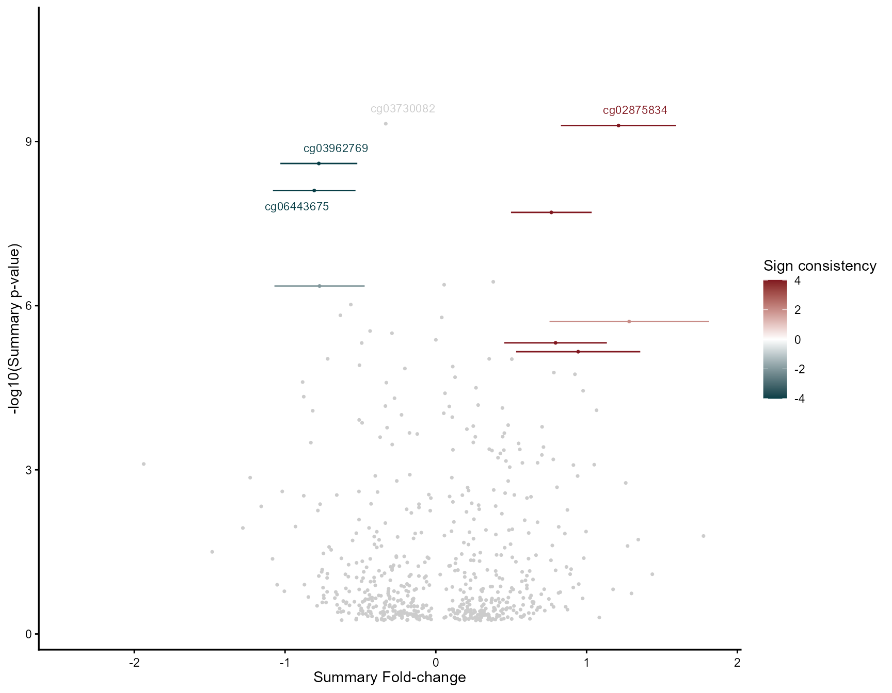
mv_vote_meth <- votecount_mv(
diffexp = meta_input,
pcriteria = "P.Value",
foldchangecol = "logFC",
genenamecol = "probes",
geneidcol = NULL,
pvalue = 0.05,
foldchange = 0,
metathr = 0.01,
label_top_n = 10,
label_size = 3.5,
jobname = "Vote_methylation",
outputfolder = tempdir(),
draw = "HTML"
)
mv_vote_meth@MetaVolcano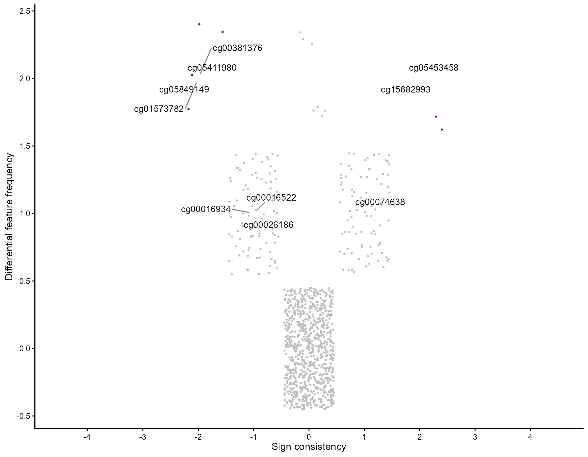
mv_fisher_meth <- combining_mv(
diffexp = meta_input,
pcriteria = "P.Value",
foldchangecol = "logFC",
genenamecol = "probes",
metafc = "Mean",
metathr = 0.01,
collaps = TRUE,
jobname = "Fisher_methylation",
outputfolder = tempdir(),
draw = "HTML"
)
mv_fisher_meth@MetaVolcano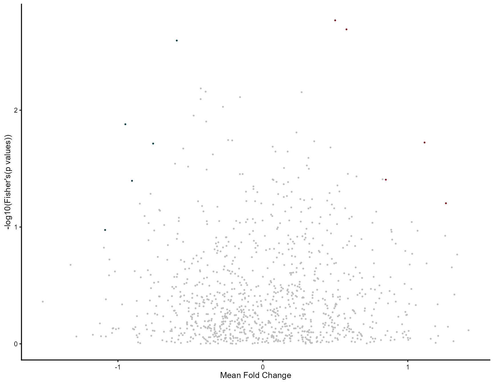
Since
getAnnotation(IlluminaHumanMethylation450kanno.ilmn12.hg19)
also retrieves probe metadata — which genomic feature each probe
overlaps (promoter, gene body, TSS, UTRs) — it’s straightforward to
filter for features of interest before running the meta-analysis, if a
specific regulatory context is the target of the study.
Every example above uses MetaVolcanoR’s default styling — no custom
colors, no titles, one consistent figure size. All three main functions
(rem_mv(), votecount_mv(),
combining_mv()), plus draw_forest() and
draw_featurebar(), also accept a set of customization
parameters, useful when preparing figures for a manuscript or a
presentation.
colors — custom color schemepoint_size — size of data pointslabel_genes — vector of specific
features to labellabel_top_n — automatically label the
top N featureslabel_size — size of feature
labelsplot_title — custom plot title
(NULL for no title, the default)show_legend — show or hide the
legend
meta_custom <- rem_mv(
diffexp = diffexplist,
metathr = 0.01,
outputfolder = tempdir(),
draw = "HTML",
colors = c(low = "purple", mid = "white", high = "orange", na = "gray80"),
point_size = 1.5,
label_genes = c("MMP9", "COL6A6", "MXRA5", "CIDEA"),
label_size = 4,
plot_title = "REM Meta-Analysis - Custom Colors",
show_legend = TRUE
)## index Symbol Log2FC_1 CI.L_1 CI.R_1 vi_1 Log2FC_2
## 1 4795 MXRA5 0.8150851 0.3109324 1.3192377 0.06616251 1.3001104
## 2 2166 COL6A6 -1.7480348 -2.5780749 -0.9179947 0.17934364 -0.8388366
## 3 2053 CIDEA NA NA NA NA NA
## 4 7115 SULT1A4 0.9689025 0.5103475 1.4274575 0.05473571 0.7513323
## 5 130 ACACB -0.8431142 -1.4708480 -0.2153804 0.10257437 -1.1119841
## 6 6528 SLC27A2 -0.6782948 -0.9931027 -0.3634869 0.02579759 -1.8916655
## CI.L_2 CI.R_2 vi_2 Log2FC_3 CI.L_3 CI.R_3 vi_3
## 1 0.6603306 1.9398901 0.10654886 1.1895480 0.8401301 1.5389659 0.031781777
## 2 -1.3578456 -0.3198277 0.07011930 -1.0300519 -1.4730328 -0.5870710 0.051080819
## 3 NA NA NA -1.0111528 -1.3226326 -0.6996729 0.025255027
## 4 0.4707021 1.0319624 0.02050012 NA NA NA NA
## 5 -1.7417389 -0.4822293 0.10323592 -0.5305046 -0.6957455 -0.3652637 0.007107599
## 6 -2.6822584 -1.1010726 0.16270229 -1.2126830 -1.6702908 -0.7550753 0.054509799
## Log2FC_4 CI.L_4 CI.R_4 vi_4 Log2FC_5 CI.L_5 CI.R_5
## 1 0.2188594 -1.052230 1.4899492 0.4205720 0.8051543 0.1367255 1.4735830
## 2 -1.3755263 -2.162453 -0.5885999 0.1611967 -0.7213490 -1.5714484 0.1287505
## 3 -1.7991026 -2.918939 -0.6792665 0.3264351 -0.8738120 -1.6373061 -0.1103179
## 4 NA NA NA NA NA NA NA
## 5 -0.7991042 -1.457868 -0.1403403 0.1129659 -0.5155929 -0.8606782 -0.1705076
## 6 -1.3554403 -2.288444 -0.4224370 0.2265970 -1.4905464 -2.5565023 -0.4245905
## vi_5 signcon ntimes randomSummary randomCi.lb randomCi.ub randomP
## 1 0.11630493 5 5 1.0333001 0.7882044 1.2783958 1.420312e-16
## 2 0.18811668 -5 5 -1.0649749 -1.3396138 -0.7903361 2.956522e-14
## 3 0.15173972 -3 3 -1.0417876 -1.3210774 -0.7624977 2.653168e-13
## 4 NA 2 2 0.8106154 0.5712566 1.0499741 3.187477e-11
## 5 0.03099851 -5 5 -0.5830624 -0.7212245 -0.4449003 1.324963e-16
## 6 0.29577833 -5 5 -1.2207058 -1.6760435 -0.7653680 1.484852e-07
## het_QE het_QEp het_QM het_QMp error randomP.adjust se
## 1 4.179945 0.38220032 68.27752 1.420312e-16 FALSE 3.737313e-13 0.12504883
## 2 4.580708 0.33308457 57.76318 2.956522e-14 FALSE 4.667756e-11 0.14012185
## 3 1.980047 0.37156797 53.44957 2.653168e-13 FALSE 3.490685e-10 0.14249482
## 4 0.629179 0.42765661 44.05825 3.187477e-11 FALSE 2.287450e-08 0.12212181
## 5 4.317851 0.36469506 68.41455 1.324963e-16 FALSE 3.737313e-13 0.07049086
## 6 11.099093 0.02547263 27.60901 1.484852e-07 FALSE 3.255949e-05 0.23231516
## rank
## 1 1
## 2 2
## 3 3
## 4 4
## 5 5
## 6 6
meta_custom@MetaVolcano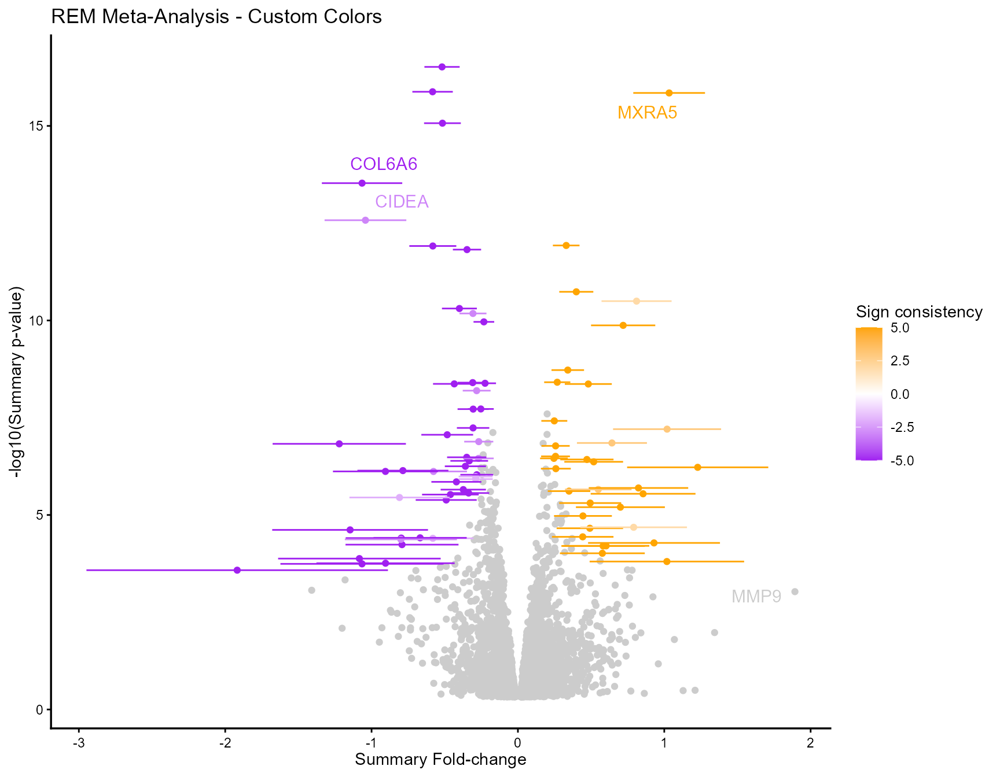
meta_vote_labeled <- votecount_mv(
diffexp = diffexplist,
pvalue = 0.05,
metathr = 0.01,
outputfolder = tempdir(),
draw = "HTML",
colors = c("orange", "gray90", "purple"),
point_size = 1.2,
label_top_n = 10,
label_size = 3.5,
plot_title = "Vote-Counting: Top 10 Features Labeled"
)
meta_vote_labeled@MetaVolcano
meta_publication <- combining_mv(
diffexp = diffexplist,
metafc = "Median",
metathr = 0.01,
collaps = TRUE,
outputfolder = tempdir(),
draw = "HTML",
colors = c("darkgreen", "white", "darkorange"),
point_size = 1.0,
label_genes = c("MMP9", "ANG", "ACVR1C"),
label_size = 3,
plot_title = NULL, # No title, for publication
show_legend = FALSE
)
meta_publication@MetaVolcano
draw_forest(
remres = mv_rem,
gene = "MMP9",
outputfolder = tempdir(),
draw = "PDF",
colors = c(
positive = "darkred", # Positive fold-change
negative = "steelblue", # Negative fold-change
neutral = "gray70", # Individual studies
reference = "black" # Reference line
),
point_size = 3,
plot_width = 7, # inches, for PDF
plot_height = 6,
plot_title = "MMP9 Expression Meta-Analysis"
)
# Professional/conservative
colors_professional <- c(low = "blue", mid = "white", high = "red", na = "gray80")
# High contrast (for presentations)
colors_presentation <- c(low = "purple", mid = "white", high = "orange", na = "lightgray")
# Color-blind friendly
colors_colorblind <- c(low = "#0072B2", mid = "white", high = "#D55E00", na = "gray80")
# Grayscale (for print)
colors_grayscale <- c(low = "black", mid = "gray90", high = "gray30", na = "gray70")
meta_rem <- rem_mv(
diffexp = diffexplist,
colors = colors_colorblind, # or any of the schemes above
# ... other parameters
)For vote-counting and combining, provide a 3-color vector instead (down, neutral, up):
custom_colors <- c("navyblue", "gray85", "darkred")
meta_vote <- votecount_mv(
diffexp = diffexplist,
colors = custom_colors,
# ... other parameters
)
meta_final <- rem_mv(
diffexp = diffexplist,
metathr = 0.01,
outputfolder = tempdir(),
draw = "HTML",
ncores = 4,
colors = c(low = "#0072B2", mid = "white", high = "#D55E00", na = "gray80"),
point_size = 1.5,
label_genes = c("MMP9", "COL6A6"),
label_top_n = 5,
label_size = 3.5,
plot_title = "Meta-Analysis: Disease vs Control",
show_legend = TRUE
)
meta_final@MetaVolcano
draw_forest(
remres = meta_final,
gene = "MMP9",
outputfolder = tempdir(),
draw = "PDF",
colors = c(positive = "#D55E00", negative = "#0072B2",
neutral = "gray60", reference = "black"),
point_size = 3,
plot_width = 8,
plot_height = 6
)show_legend = FALSE for cleaner figures (add a
legend in the figure caption instead).plot_title = NULL and add titles in your manuscript
text instead.draw = "PDF") for vector graphics in
publications.plot_width and plot_height to match
journal requirements.
meta_result <- rem_mv(
diffexp = diffexplist,
draw = "HTML", # or "PDF"
outputfolder = "path/to/output"
# ... other parameters
)
# The plot is automatically saved to outputfolder.
# HTML: interactive plot you can explore in a browser.
# PDF: publication-ready vector graphics.## R version 4.4.1 (2024-06-14 ucrt)
## Platform: x86_64-w64-mingw32/x64
## Running under: Windows 11 x64 (build 26200)
##
## Matrix products: default
##
##
## locale:
## [1] LC_COLLATE=Portuguese_Brazil.utf8 LC_CTYPE=Portuguese_Brazil.utf8
## [3] LC_MONETARY=Portuguese_Brazil.utf8 LC_NUMERIC=C
## [5] LC_TIME=Portuguese_Brazil.utf8
##
## time zone: America/Sao_Paulo
## tzcode source: internal
##
## attached base packages:
## [1] parallel stats4 stats graphics grDevices utils datasets
## [8] methods base
##
## other attached packages:
## [1] purrr_1.2.2
## [2] tidyr_1.3.2
## [3] tibble_3.3.1
## [4] IlluminaHumanMethylation450kanno.ilmn12.hg19_0.6.1
## [5] minfi_1.52.1
## [6] bumphunter_1.48.0
## [7] locfit_1.5-9.12
## [8] iterators_1.0.14
## [9] foreach_1.5.2
## [10] Biostrings_2.74.1
## [11] XVector_0.46.0
## [12] SummarizedExperiment_1.36.0
## [13] Biobase_2.66.0
## [14] MatrixGenerics_1.18.1
## [15] matrixStats_1.5.0
## [16] GenomicRanges_1.58.0
## [17] GenomeInfoDb_1.42.3
## [18] IRanges_2.40.1
## [19] S4Vectors_0.44.0
## [20] BiocGenerics_0.52.0
## [21] ggplot2_4.0.3
## [22] dplyr_1.2.1
## [23] MetaVolcanoR_1.0.2
##
## loaded via a namespace (and not attached):
## [1] splines_4.4.1 BiocIO_1.16.0
## [3] bitops_1.0-9 preprocessCore_1.68.0
## [5] XML_3.99-0.23 lifecycle_1.0.5
## [7] Rdpack_2.6.6 lattice_0.22-6
## [9] MASS_7.3-60.2 base64_2.0.2
## [11] scrime_1.3.7 crosstalk_1.2.2
## [13] magrittr_2.0.4 limma_3.62.2
## [15] metafor_5.0-1 plotly_4.12.0
## [17] sass_0.4.10 rmarkdown_2.31
## [19] plotrix_3.8-14 jquerylib_0.1.4
## [21] yaml_2.3.12 qqconf_1.3.2
## [23] otel_0.2.0 sn_2.1.3
## [25] doRNG_1.8.6.3 askpass_1.2.1
## [27] cowplot_1.2.0 DBI_1.3.0
## [29] RColorBrewer_1.1-3 multcomp_1.4-30
## [31] abind_1.4-8 zlibbioc_1.52.0
## [33] quadprog_1.5-8 RCurl_1.98-1.18
## [35] TH.data_1.1-5 sandwich_3.1-1
## [37] GenomeInfoDbData_1.2.13 ggrepel_0.9.8
## [39] rentrez_1.2.4 genefilter_1.88.0
## [41] TFisher_0.2.0 annotate_1.84.0
## [43] pkgdown_2.2.0 DelayedMatrixStats_1.28.1
## [45] codetools_0.2-20 DelayedArray_0.32.0
## [47] xml2_1.5.2 tidyselect_1.2.1
## [49] UCSC.utils_1.2.0 farver_2.1.2
## [51] beanplot_1.3.1 illuminaio_0.48.0
## [53] mathjaxr_2.0-0 GenomicAlignments_1.42.0
## [55] jsonlite_2.0.0 multtest_2.62.0
## [57] survival_3.6-4 systemfonts_1.3.2
## [59] tools_4.4.1 ragg_1.5.2
## [61] Rcpp_1.1.1 glue_1.8.0
## [63] mnormt_2.1.2 SparseArray_1.6.2
## [65] xfun_0.57 metap_1.14
## [67] HDF5Array_1.34.0 withr_3.0.3
## [69] numDeriv_2016.8-1.1 fastmap_1.2.0
## [71] rhdf5filters_1.18.1 openssl_2.4.0
## [73] digest_0.6.35 R6_2.6.1
## [75] textshaping_1.0.5 colorspace_2.1-2
## [77] RSQLite_2.4.6 utf8_1.2.6
## [79] generics_0.1.4 data.table_1.18.2.1
## [81] rtracklayer_1.66.0 httr_1.4.8
## [83] htmlwidgets_1.6.4 S4Arrays_1.6.0
## [85] pkgconfig_2.0.3 gtable_0.3.6
## [87] blob_1.3.0 S7_0.2.1
## [89] siggenes_1.80.0 htmltools_0.5.8.1
## [91] scales_1.4.0 png_0.1-9
## [93] knitr_1.51 tzdb_0.5.0
## [95] rjson_0.2.23 nlme_3.1-164
## [97] curl_7.0.0 zoo_1.8-15
## [99] cachem_1.1.0 rhdf5_2.50.2
## [101] metadat_1.6-0 AnnotationDbi_1.68.0
## [103] restfulr_0.0.16 desc_1.4.3
## [105] GEOquery_2.74.0 pillar_1.11.1
## [107] grid_4.4.1 reshape_0.8.10
## [109] vctrs_0.7.1 xtable_1.8-8
## [111] evaluate_1.0.5 readr_2.2.0
## [113] GenomicFeatures_1.58.0 mvtnorm_1.3-5
## [115] cli_3.6.2 compiler_4.4.1
## [117] Rsamtools_2.22.0 rlang_1.2.0
## [119] crayon_1.5.3 rngtools_1.5.2
## [121] mutoss_0.1-14 labeling_0.4.3
## [123] nor1mix_1.3-3 mclust_6.1.3
## [125] plyr_1.8.9 fs_2.1.0
## [127] viridisLite_0.4.3 BiocParallel_1.40.0
## [129] assertthat_0.2.1 topconfects_1.22.0
## [131] lazyeval_0.2.3 Matrix_1.7-0
## [133] hms_1.1.4 sparseMatrixStats_1.18.0
## [135] bit64_4.6.0-1 Rhdf5lib_1.28.0
## [137] KEGGREST_1.46.0 statmod_1.5.1
## [139] rbibutils_2.4.1 memoise_2.0.1
## [141] bslib_0.11.0 bit_4.6.0